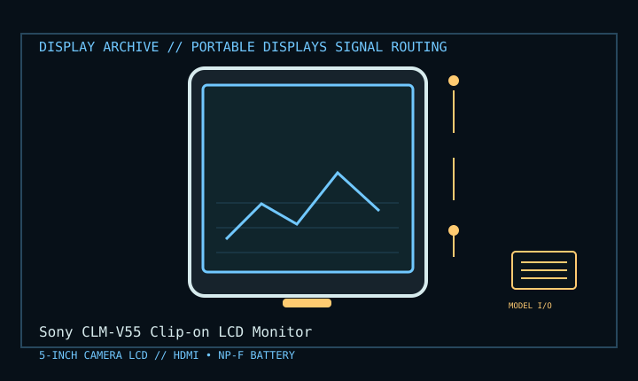

[ INDIVIDUAL COMPONENT // DISPLAY ARCHIVE ]
Sony CLM-V55 Clip-on LCD Monitor
Compact 5-inch camera-top monitor for HDMI-equipped still/video cameras.

IDENTIFICATION: Match the exact model suffix, region and installed option boards to the cited manual and rear label. Do not infer electrical compatibility from connector shape.
Model-specific specifications
| Catalog class | Portable Displays |
|---|---|
| Exact product | Sony CLM-V55 Clip-on LCD Monitor |
| Era / purpose | Compact 5-inch camera-top monitor for HDMI-equipped still/video cameras. |
| Panel / image | 5-inch 16:9 LCD. Sony operating instructions do not state a native pixel matrix; do not treat camera input raster as panel resolution. |
| Supported input | One HDMI input for supported camera video formats; exact accepted formats are in the CLM-V55 compatibility table. Headphone output carries HDMI audio. |
| Power | Sony InfoLITHIUM M-series battery mount (NP-FM500H / compatible listed models) or supplied AC adapter; check adapter rating and region. |
| Mechanical | Approximately 129 × 88.5 × 20 mm, 250 g without battery; shoe adapter, adjustable tilt and clip-on sun hood. |
Revision, timing & host compatibility
Camera accessory monitor, not a general PC display. Confirm that the camera HDMI output format is on Sony’s supported list and that the cable’s connector is compatible; HDMI input does not imply native 1080 panel pixels. Batteries and AC adapters must be listed for CLM-V55 and correctly seated.
Before operation, compare source signal type, scan/frame timing, pinout, interface bandwidth, input-board configuration and mains/DC rating against the model-specific manual and nameplate. A listed maximum mode is not a promise of optimum image quality.
Vintage preservation & repair notes
Retain shoe adapter, HDMI lead, hood, battery cover and model-matched AC supply; missing small parts limit field use. Check LCD uniformity, hinge and battery contacts. Avoid sun exposure/heat and do not pressure the panel. Preserve the exact accepted signal-format table with the monitor.
Record serial/date code, configuration, all installed interface boards, accessories, image condition, calibration state, test source and document edition. Disconnect power before external cleaning and use only the manufacturer-approved procedure; do not open CRT/LCD/OLED equipment without qualified service practice.
Manufacturer manuals & specifications
- Sony CLM-V55 ManualsSony official operating instructions and support downloads.
- Sony CLM-V55 SpecificationsSony model-specific specification page.